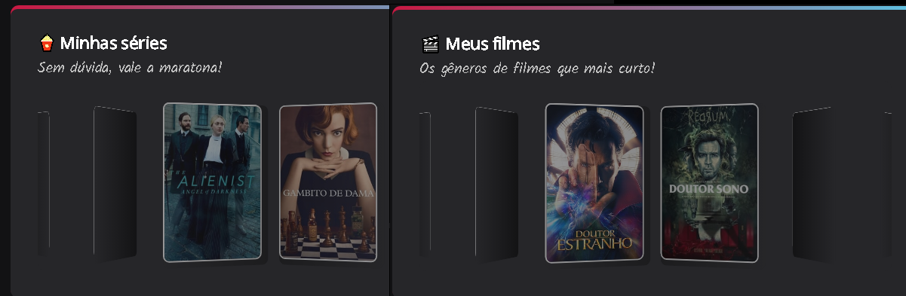

20 de Setembro de 2022.
NLW-eSports

Proposta desenvolvida como desafio extra no evento NLW-eSports (Next Level Week) da Rocketseat. Além do CSS, HTML, Git e Github, foi utilizada a biblioteca Swiper (Upgrade Layout) - Infinite loop e Effect coverflow. Neste projeto deveríamos especificar os estilhos de filmes e séries favoritos.